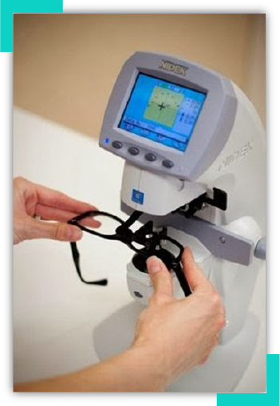
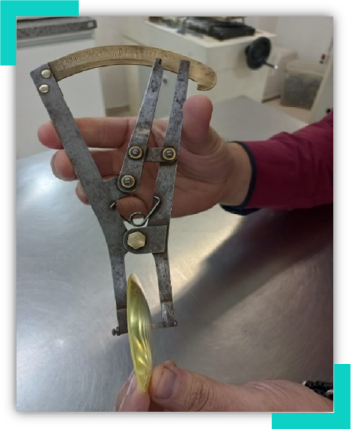
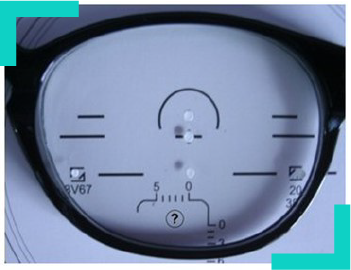
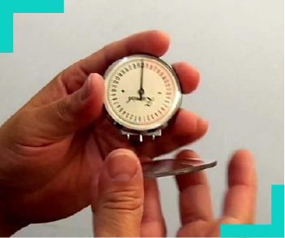
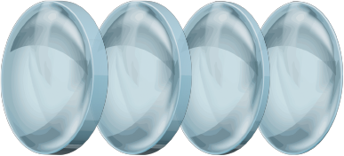

Óptica
Conferência dos óculos: potência, posição do centro óptico, espessura e polimento e medidas técnicas para lentes oftálmicas: dioptria, espessura e curvatura
Conferência dos óculos é um tema de grande relevância para a confecção de um laudo técnico, pois, por meio da conferência do trabalho realizado, será possível ter certeza de estar entregando óculos que foram confeccionados conforme a prescrição do especialista e de acordo com a ordem de serviço solicitada ao laboratório.
Para esse trabalho ser realizado, será necessário dispor de instrumentos que você acompanhará neste material, como o lensômetro, o especímetro, a régua milimétrica e a lupa, que devem estar à disposição do profissional, assim como dominar as técnicas de conferência, como a conferência da dioptria, da espessura, da posição do centro óptico e de polimento, que também serão vistas no decorrer deste conteúdo.
Conferência da dioptria
A potência de uma lente diz respeito à força dióptrica (dioptria) que ela tem. A dioptria precisa estar de acordo com a prescrição enviada pelo especialista e deve ser conferida com o uso do lensômetro. Caso esteja maior que a dioptria indicada, provavelmente o usuário encontrará dificuldade ao focalizar visão de longe, intermediária ou de perto, isso porque a lente ficou hipercorrigida (dioptria maior) e fora das tolerâncias ópticas. Caso ocorra o contrário, haverá uma defasagem de visão, em razão de a dioptria estar aquém do que foi solicitado.
O cliente, em qualquer um dos casos, pode solicitar um laudo técnico. Assim, o caso será passado para o perito e ele conferirá os óculos e, assim, realizará o laudo.

Figura 1 – Lensômetro digital
Fonte: Maciel (2013)
Conferência da espessura
A espessura de uma lente oftálmica é um fator bastante relevante na conferência, pois, em altas dioptrias, torna-se uma preocupação no momento da venda dos óculos e também em sua confecção, por interferir bastante na estética.
Para a conferência de espessura, o perito utiliza um instrumento chamado especímetro.

Figura 2 – Especímetro
Fonte: Senac EAD (2023)
Conferência da posição do centro óptico
A posição do centro óptico da lente deve coincidir com a DNP (distância naso-pupilar) do cliente. Essa conferência é feita marcando no lensômetro o centro óptico da lente e, com auxílio de uma régua milimétrica, verificando se ele coincide com as medidas da DNP do usuário. Caso isso não ocorra, o cliente pode visualizar imagens deformadas.

Figura 3 – Lente montada na armação com marcações para lensometria
Fonte: Maciel (2012)
Conferência do polimento
O polimento é a última etapa da surfaçagem de uma lente oftálmica, processo que traz acabamento e brilho à lente. Uma lente bem polida proporciona ao usuário de óculos uma visão nítida livre de borrões e ranhuras, porém, quando não é bem-acabada, pode causar ofuscamento.
O processo de conferência do polimento requer muita atenção. Deve-se posicionar a lente sob a luz e, com uma lupa, observar toda a sua estrutura, a fim de inspecionar se há alguma imperfeição na superfície.
Conferir óculos requer muita atenção e precisão na utilização dos instrumentos destinados a essa finalidade. Cabe ao perito desempenhar essa função utilizando todo o seu conhecimento teórico e prático, a fim de atender plenamente às necessidades da confecção deste laudo.
Medidas técnicas para lentes oftálmicas: dioptria, espessura e curvatura
Sabe-se que um laudo técnico é solicitado quando o usuário dos óculos não está satisfeito com o trabalho realizado pela óptica onde encomendou os óculos. Ele pode não estar enxergando bem ou não estar satisfeito com o modelo de óculos depois de fabricado, o que é menos provável.
Caso não esteja enxergando bem, é preciso verificar os motivos, que podem ser da tomada de medidas técnicas, que engloba, mais precisamente, a dioptria (grau da prescrição), que diz respeito também às suas curvaturas e espessuras.
Então, realiza-se a solicitação do laudo quando o problema foge da identificação da óptica por meio das conferências e precisões nas medidas e o cliente reporta ainda estar insatisfeito.
Na construção do laudo técnico, o perito deverá analisar todas as medidas técnicas e conferir se estão de acordo com o que foi solicitado pela óptica, pois, quando as medidas não estão corretas, causam desconforto para o usuário de óculos.
Dioptria
A dioptria representa a força de refração que é referida por meio da prescrição realizada pelo especialista. A prescrição será avaliada pelo técnico em óptica, que indicará o material da lente para a confecção dos óculos do usuário. Os óculos seguirão para o laboratório para serem fabricados por meio de curvaturas que darão origem às lentes com a dioptria prescrita.
Curvatura
A dioptria das lentes oftálmicas depende de suas curvaturas externas e internas. Essa dioptria pode ser negativa ou positiva, dependendo do valor dessas curvaturas. Caso a curvatura externa seja maior que curvatura interna, a lente positiva será positiva; e caso contrário, se a curvatura interna for maior que a externa, a lente será negativa.
Lentes esféricas
São indicadas para pessoas portadoras de hipermetropia (dificuldade de enxergar de perto) ou para os portadores de miopia (dificuldade de enxergar de longe). As lentes esféricas são constituídas por duas curvaturas, uma externa (positiva) e outra interna (negativa).
Lentes cilíndricas
Têm meridianos diferentes: um principal e outro oposto. São indicadas para pessoas que têm a córnea com formatos ovais e irregulares, o que gera um erro de refração, fazendo com que as imagens fiquem desfocadas quando os objetos estão tanto perto quanto longe.
São sempre indicadas por uma curvatura esférica e uma cilíndrica, esta acompanhada de eixo de outra medida, que é a posição que descreve a orientação (ou ângulo) onde devem ser posicionados os graus prescritos em sua receita. O eixo pode variar de 0° a 180°.
As curvaturas são medidas com um instrumento denominado esferômetro.

Figura 4 – Esferômetro analógico
Fonte: Tecnologia Óptica (2015)
Espessura
Outra medida técnica importante na fabricação é a espessura das lentes. Toda lente oftálmica tem espessura de centro e espessura de bordas. As lentes positivas têm a espessura central mais espessa que nas bordas. As lentes negativas têm a espessura central mais fina do que nas bordas.
As espessuras de bordas são aplicadas a 0° e 180°. A diferença entre essas espessuras é chamada de diferença de borda (DB). Manter essa diferença é imprescindível para que a lente atenda às necessidades do usuário.
As medidas técnicas dizem respeito desde o momento em que o técnico afere a tomada de medidas do usuário na óptica até a fabricação das lentes oftálmicas no laboratório.
Quando houver queixas referentes ao desconforto no uso dos óculos ou à insatisfação no resultado estético deles, o perito deverá ter cautela ao realizar a conferência de cada item das medidas na construção do laudo e prestar esclarecimentos, a fim de encontrar onde está a provável causa da não aceitação do usuário.